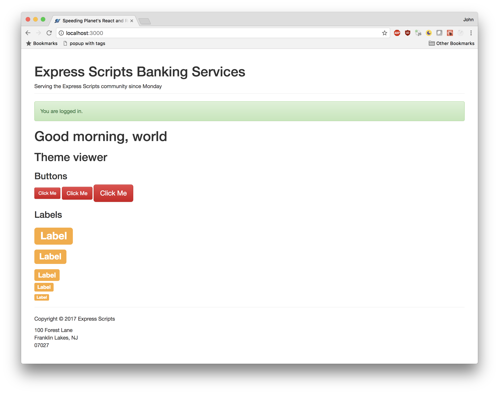
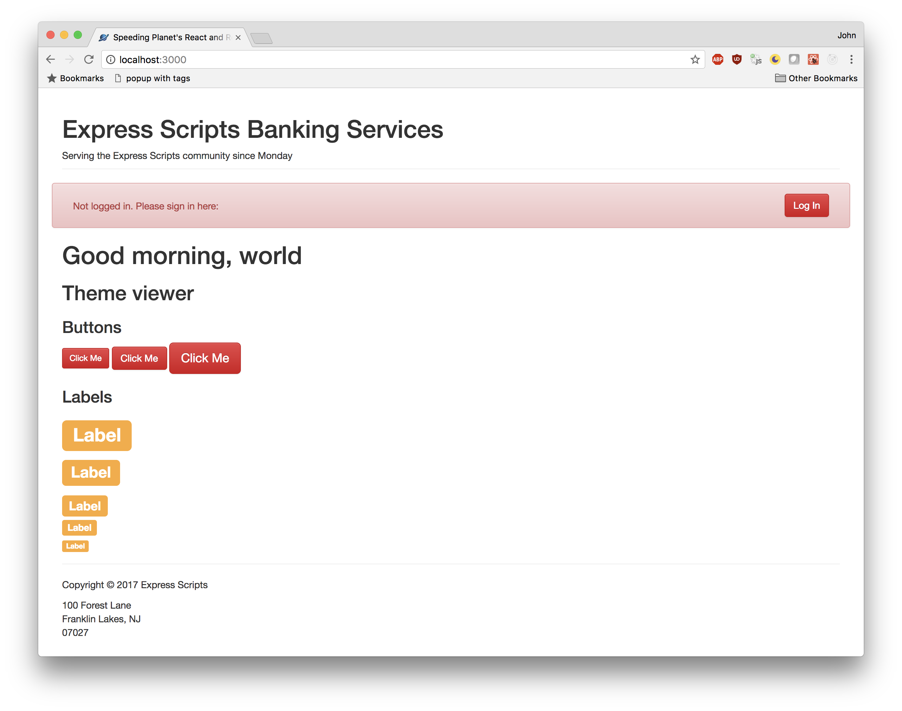

1) Create a component, LoggedIn, as a banner to show when the user is logged in.
2) Create a component, NotLoggedIn, as a banner to show when the user is NOT logged in.
3) Conditionally display the appropriate banner within <App>.
Open LoggedIn.js
Create a functional component here. The component should display a banner indicating that the user is logged in. You may want to use the classes for alerts in Bootstrap to get a banner effect.
Open NotLoggedIn.js
As above, create a component which displays a banner for when the user is not logged in.
Open App.js
Before the return statement, initialize a variable loggedIn. Set it to true if the
user is logged in, false otherwise. (Obviously, we have no user login at the moment, but
may in the future. We are simply sketching out the UI here.)
If loggedIn is true, display the LoggedIn component. If loggedIn is false,
display the NotLoggedIn component.
Load http://localhost:3000/ in your browser.
It should look like this when loggedIn is true:

It should look like this when loggedIn is false:
